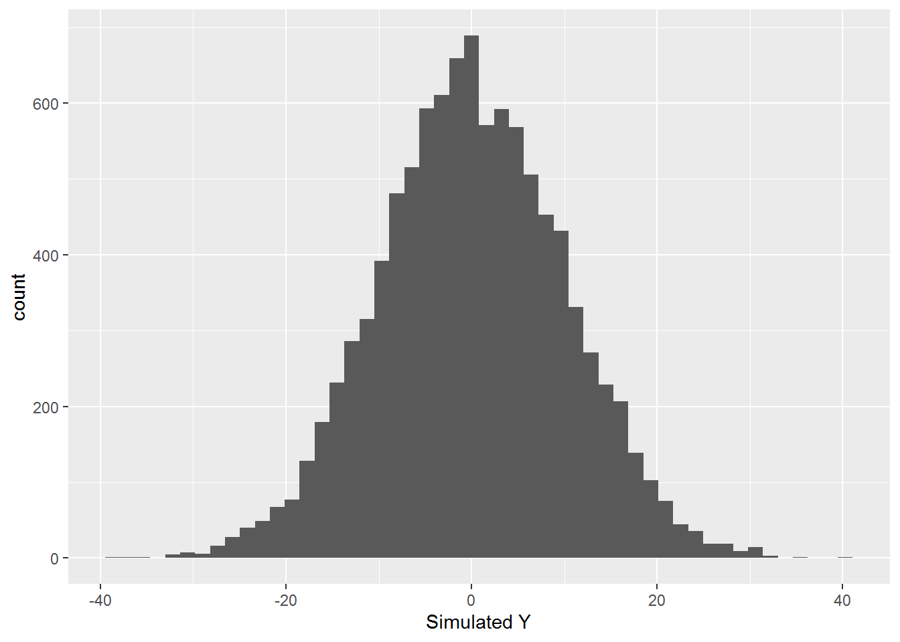
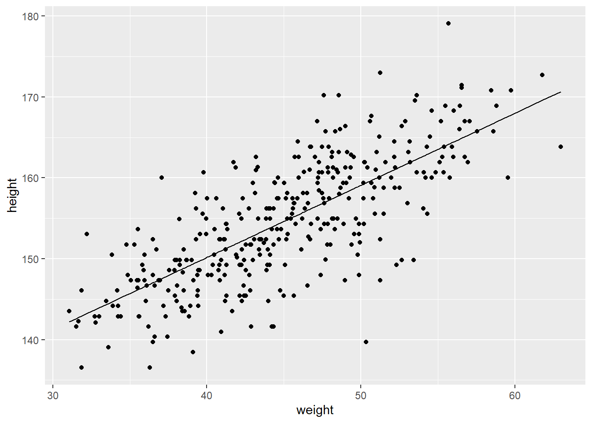
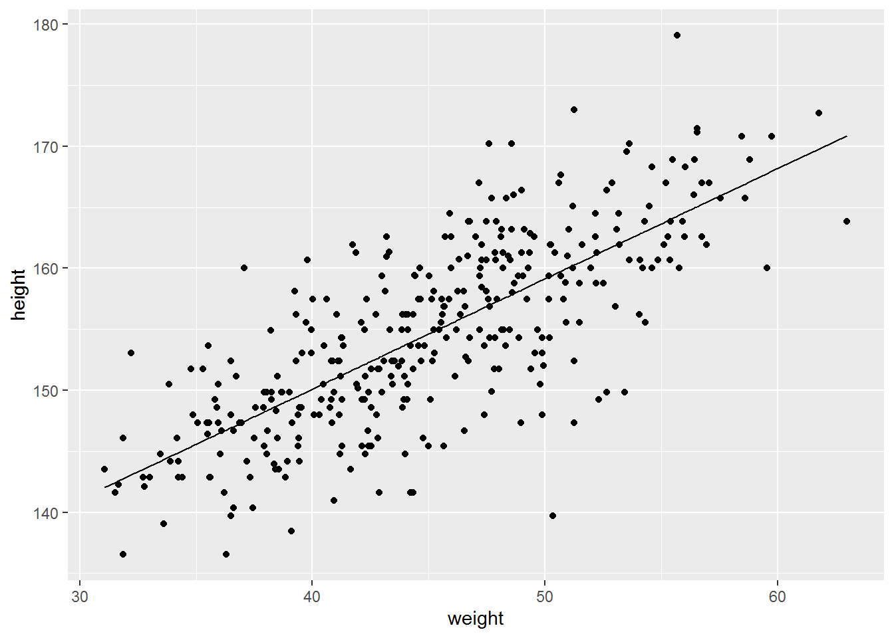
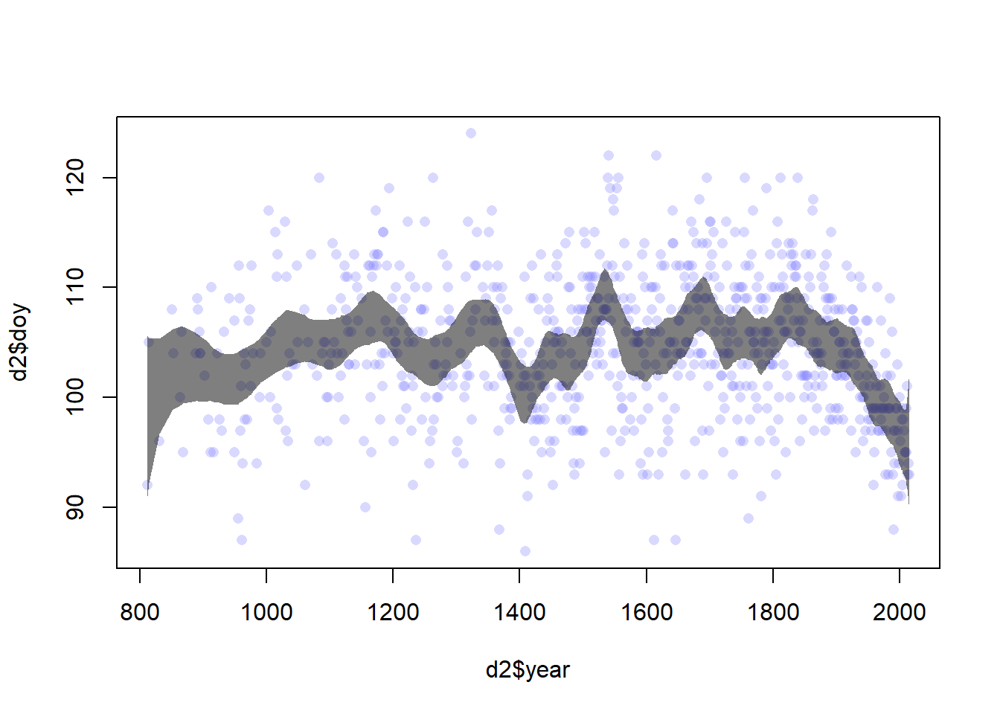
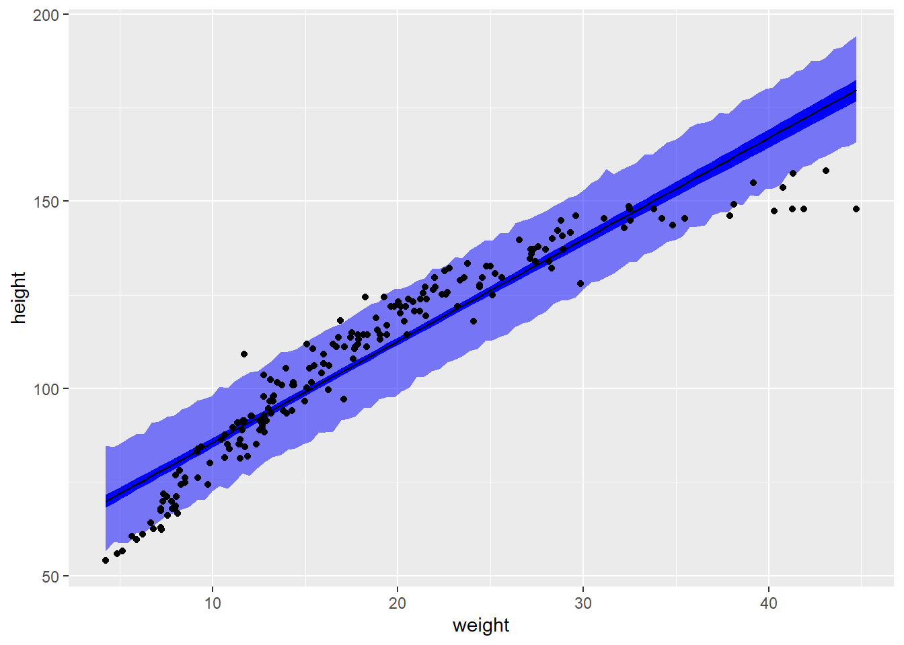
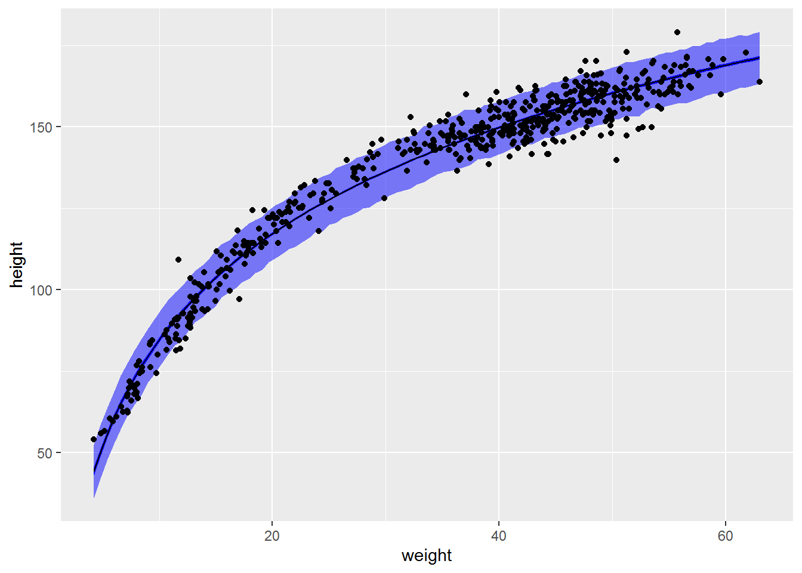
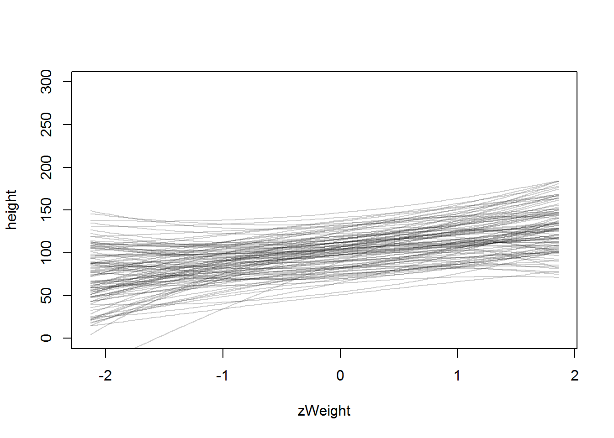
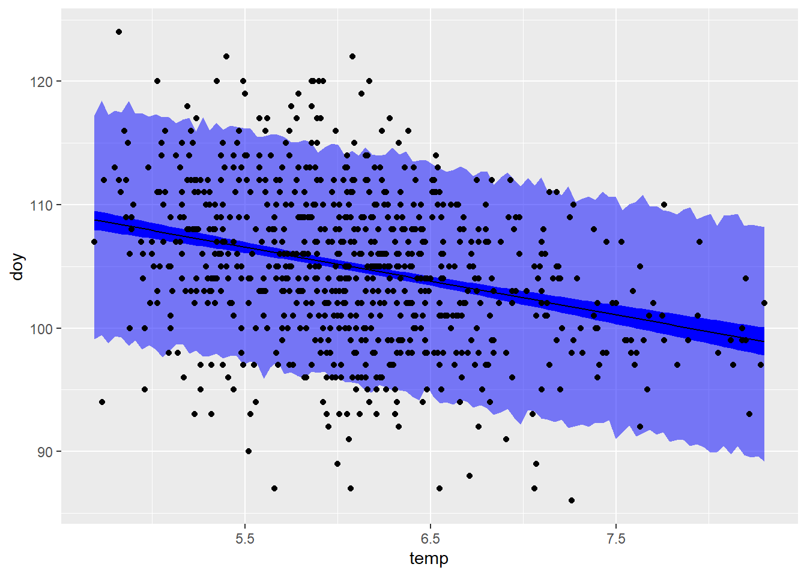

Chapter 8 Solutions for Chapter 4
4E1
In the model definition below, which line is the likelihood? \[\rightarrow ~ y_i \sim Normal(\mu, \sigma) ~ \leftarrow\\ \mu \sim Normal(0, 10) \\ \sigma \sim Exponential(1)\]
4E2
In the model definition just above, how many parameters are in the posterior distribution?
**Two: \(\mu\) and \(\sigma\).
4E3
Using the model definition above, write down the appropriate form of Bayes’ theorem that includes the proper likelihood and priors.
\[ Pr(\mu, \sigma | y) = \frac{\prod_i Normal(y_i| \mu, \sigma) \cdot Normal(mu | 0, 10) \cdot Exponential(\sigma | 1)} {\int \int \prod_i Normal(y_i| \mu, \sigma) \cdot Normal(mu | 0, 10) \cdot Exponential(\sigma | 1) \partial \mu \partial \sigma} \]
4E4
In the model definition below, which line is the linear model?
\[y_i ∼ Normal(\mu, \sigma) \\ \rightarrow ~\mu_i = \alpha + \beta x_i ~\leftarrow\\ α ∼ Normal(0, 10) \\ β ∼ Normal(0, 1) \\ σ ∼ Exponential(2)\]
4E5
In the model definition just above, how many parameters are in the posterior distribution?
Three, \(α\), \(β\) (used to compute \(\mu\)), and \(\sigma\).
4M1
For the model definition below, simulate observed y values from the prior (not the posterior).
\[y_i \sim Normal(\mu,\sigma) \\ \mu \sim Normal(0, 10) \\ \sigma \sim Exponential(1)\]
library(ggplot2)
samples_N <- 1e4
mu <- rnorm(samples_N, 0, 10)
sigma <- rexp(samples_N, 1)
y_sim <- rnorm(samples_N, mu, sigma)
ggplot(data=NULL, aes(x=y_sim)) +
geom_histogram(bins=50) +
xlab("Simulated Y")
4M2
Translate the model just above into a quap formula.
4M3
Translate the quap model formula below into a mathematical model definition.
y ~ dnorm( mu , sigma ),
mu <- a + b*x,
a ~ dnorm( 0 , 10 ),
b ~ dunif( 0 , 1 ),
sigma ~ dexp( 1 )\[y_i ∼ Normal(\mu, \sigma) \\ \mu_i = \alpha + \beta x_i \\ α ∼ Normal(0, 10) \\ β ∼ Uniform(0, 1) \\ σ ∼ Exponential(1)\]
4M4
A sample of students is measured for height each year for 3 years. After the third year, you want to fit a linear regression predicting height using year as a predictor. Write down the mathematical model definition for this regression, using any variable names and priors you choose. Be prepared to defend your choice of priors.
I assume students as in college students. Therefore, you would expect an adult height, may be slightly lower, hence 170 for the intercept. You don’t expect them to grow much, hence conservative slope for the effect of the year. I assume a fairly broad but strictly positive prior for \(\sigma\).
\[h_i ∼ Normal(\mu, \sigma) \\ \mu_i = \alpha + \beta year_i \\ α ∼ Normal(170, 10) \\ β ∼ Normal(0, 1) \\ σ ∼ Exponential(0.1)\]
4M5
Now suppose I remind you that every student got taller each year. Does this information lead you to change your choice of priors? How?
I would ensure that \(\beta\) can be only positive, so \(β ∼ Exponential(1)\).
4M6
Now suppose I tell you that the variance among heights for students of the same age is never more than 64cm. How does this lead you to revise your priors?
Based on the density plot, I would pick a more conservative prior of \(\sigma \sim Exponential(0.5)\) that drops off more rapidly and just barely includes \(\sqrt(64)\).
x <- seq(0, 10, length.out=100)
ggplot(data=NULL, aes(x=x, y= dexp(x, 0.5))) +
geom_line() +
scale_x_continuous(breaks = 0:10) +
ylab("Probability density")
4M7
Refit model m4.3 from the chapter, but omit the mean weight xbar this time. Compare the new model’s posterior to that of the original model. In particular, look at the covariance among the parameters. What is different? Then compare the posterior predictions of both models.
# load data again, since it's a long way back
library(rethinking)
data(Howell1);
d <- Howell1;
d2 <- d[d$age >= 18,]
# define the average weight, x-bar
xbar <- mean(d2$weight)
# fit model
m4_3c <- quap(
alist(
height ~ dnorm(mu, sigma),
mu <- a + b * (weight - xbar),
a ~ dnorm(178, 20) ,
b ~ dlnorm(0, 1) ,
sigma ~ dunif(0, 50)) ,
data=d2)
m4_3 <- quap(
alist(
height ~ dnorm(mu, sigma),
mu <- a + b * weight,
a ~ dnorm(178, 20) ,
b ~ dlnorm(0, 1) ,
sigma ~ dunif(0, 50)) ,
data=d2)
precis(m4_3)## mean sd 5.5% 94.5%
## a 114.5342008 1.89774719 111.5012343 117.5671674
## b 0.8907326 0.04175799 0.8239952 0.9574699
## sigma 5.0727190 0.19124895 4.7670662 5.3783718## mean sd 5.5% 94.5%
## a 154.6013683 0.27030768 154.1693645 155.033372
## b 0.9032809 0.04192363 0.8362788 0.970283
## sigma 5.0718813 0.19115482 4.7663790 5.377384## a b sigma
## a 3.601 -0.078 0.009
## b -0.078 0.002 0.000
## sigma 0.009 0.000 0.037## a b sigma
## a 0.073 0.000 0.000
## b 0.000 0.002 0.000
## sigma 0.000 0.000 0.037post <- extract.samples(m4_3)
a_map <- mean(post$a)
b_map <- mean(post$b)
w <- d2$weight
prediction <- a_map + b_map*w
ggplot(data = d2, aes(x=weight, y=height)) +
geom_point() +
geom_line(data = NULL, aes(x=w, y=prediction))
post <- extract.samples(m4_3c)
a_map <- mean(post$a)
b_map <- mean(post$b)
w <- d2$weight
prediction <- a_map + b_map*(w - xbar)
ggplot(data = d2, aes(x=weight, y=height)) +
geom_point() +
geom_line(data = NULL, aes(x=w, y=prediction))
4M8
In the chapter, we used 15 knots with the cherry blossom spline. Increase the number of knots and observe what happens to the resulting spline. Then adjust also the width of the prior on the weights—change the standard deviation of the prior and watch what happens. What do you think the combination of knot number and the prior on the weights controls?
data(cherry_blossoms)
d <- cherry_blossoms
d2 <- d[ complete.cases(d$doy) , ] # complete cases on doy
num_knots <- 30
knot_list <- quantile( d2$year , probs=seq(0,1,length.out=num_knots) )
B <- bs(d2$year,
knots=knot_list[-c(1,num_knots)],
degree=3 , intercept=TRUE)
m4.7_30 <- quap(
alist(
D ~ dnorm( mu , sigma ) ,
mu <- a + B %*% w ,
a ~ dnorm(100,10),
w ~ dnorm(0,10),
sigma ~ dexp(1)),
data=list(D=d2$doy, B=B) ,
start=list(w=rep(0, ncol(B))))
mu <- link( m4.7_30 )
mu_PI <- apply(mu,2, PI, 0.97)
plot( d2$year , d2$doy , col=col.alpha(rangi2,0.3) , pch=16 )
shade( mu_PI , d2$year , col=col.alpha("black",0.5) ) Together, they control just how wiggly vs. smooth the resultant curve is.
4H1
The weights listed below were recorded in the !Kung census, but heights were not recorded for these individuals. Provide predicted heights and 89% intervals for each of these individuals. That is, fill in the table below, using model-based predictions.
predicted_weight <-
tibble(Individual = 1:5,
weight = c(46.95, 43.72, 64.78, 32.59, 54.63))
# getting sampled means
posterior_mu <- link(m4_3c, data=predicted_weight)
predicted_weight <- predicted_weight %>%
mutate(`expected height` = apply(posterior_mu, 2, mean),
LowerCI = round(apply(posterior_mu, 2, quantile, probs=(1-0.89)/2), 2),
UpperCI = round(apply(posterior_mu, 2, quantile, probs=1-(1-0.89)/2), 2),
`89% interval` = glue::glue("{LowerCI}..{UpperCI}")) %>%
select(-LowerCI, -UpperCI)
knitr::kable(predicted_weight)| Individual | weight | expected height | 89% interval |
|---|---|---|---|
| 1 | 46.95 | 156.3876 | 155.97..156.83 |
| 2 | 43.72 | 153.4682 | 153.05..153.89 |
| 3 | 64.78 | 172.5032 | 171.1..173.91 |
| 4 | 32.59 | 143.4083 | 142.5..144.37 |
| 5 | 54.63 | 163.3292 | 162.57..164.07 |
4H2
Select out all the rows in the Howell1 data with ages below 18 years of age. If you do it right, you should end up with a new data frame with 192 rows in it.
- Fit a linear regression to these data, using quap. Present and interpret the estimates. For every 10 units of increase in weight, how much taller does the model predict a child gets?
kung_kids <- filter(Howell1, age < 18)
# define the average weight, x-bar
avg_kid_weight <- mean(kung_kids$weight)
# fit model
kung_kids_fit <- quap(
alist(
height ~ dnorm(mu, sigma),
mu <- a + b * (weight - avg_kid_weight),
a ~ dnorm(140, 20) ,
b ~ dlnorm(0, 1) ,
sigma ~ dunif(0, 50)) ,
data=kung_kids)
precis(kung_kids_fit)## mean sd 5.5% 94.5%
## a 108.348193 0.60862837 107.375488 109.320899
## b 2.716657 0.06831574 2.607475 2.825839
## sigma 8.437208 0.43057023 7.749073 9.125342For every 10 units of increase in weight, the model predict a child will get 27.2 cm taller.
- Plot the raw data, with height on the vertical axis and weight on the horizontal axis. Superimpose the MAP regression line and 89% interval for the mean. Also superimpose the 89% interval for predicted heights.
mean_estimates <- tibble(weight = seq(min(kung_kids$weight), max(kung_kids$weight), length.out = 100))
sample_means <- link(kung_kids_fit, mean_estimates)
mean_estimates <-
mean_estimates %>%
mutate(mu = apply(sample_means, 2, mean),
lowerCI = apply(sample_means, 2, quantile, probs=(1-0.89)/2),
upperCI = apply(sample_means, 2, quantile, probs=1-(1-0.89)/2))
simulated_height_samples <- sim(kung_kids_fit, mean_estimates)
simulated_height <-
mean_estimates %>%
mutate(lowerCI = apply(simulated_height_samples, 2, quantile, probs=(1-0.89)/2),
upperCI = apply(simulated_height_samples, 2, quantile, probs=1-(1-0.89)/2))
ggplot(data = kung_kids, aes(x = weight, y=height)) +
geom_ribbon(data=simulated_height, aes(y=lowerCI, ymin=lowerCI, ymax=upperCI), fill="blue", alpha=0.5)+
geom_ribbon(data=mean_estimates, aes(y=mu, ymin=lowerCI, ymax=upperCI), fill="blue")+
geom_point() +
geom_line(data=mean_estimates, aes(y=mu))
- What aspects of the model fit concern you? Describe the kinds of assumptions you would change, if any, to improve the model. You don’t have to write any new code. Just explain what the model appears to be doing a bad job of, and what you hypothesize would be a better model.
The relationship is clearly no linear with rapid growth for smaller children turning into a more slow one for older ones.
4H3
Suppose a colleague of yours, who works on allometry, glances at the practice problems just above. Your colleague exclaims, “That’s silly. Everyone knows that it’s only the logarithm of body weight that scales with height!” Let’s take your colleague’s advice and see what happens.
- Model the relationship between height (cm) and the natural logarithm of weight (log-kg). Use the entire Howell1 data frame, all 544 rows, adults and non-adults. Can you interpret the resulting estimates?
kung <-
Howell1 %>%
mutate(logWeight = log(weight))
# define the average weight, x-bar
avg_log_weight <- mean(kung$logWeight)
# fit model
kung_fit <- quap(
alist(
height ~ dnorm(mu, sigma),
mu <- a + b * (logWeight - avg_log_weight),
a ~ dnorm(140, 20) ,
b ~ dlnorm(0, 1) ,
sigma ~ dunif(0, 50)) ,
data=kung)
precis(kung_fit)## mean sd 5.5% 94.5%
## a 138.263717 0.2201177 137.911927 138.615508
## b 47.072415 0.3826000 46.460947 47.683884
## sigma 5.134294 0.1556374 4.885555 5.383032Not really, as b now refers to change in height in response to 1 log-Kg of weight.
- Begin with this plot: plot( height ~ weight , data=Howell1 ). Then use samples from the quadratic approximate posterior of the model in (a) to superimpose on the plot:
- the predicted mean height as a function of weight,
- the 97% interval for the mean, and
- the 97% interval for predicted heights.
mean_estimates <-
tibble(weight = seq(min(kung$weight), max(kung$weight), length.out = 100)) %>%
mutate(logWeight = log(weight))
sample_means <- link(kung_fit, mean_estimates)
mean_estimates <-
mean_estimates %>%
mutate(mu = apply(sample_means, 2, mean),
lowerCI = apply(sample_means, 2, quantile, probs=(1-0.89)/2),
upperCI = apply(sample_means, 2, quantile, probs=1-(1-0.89)/2))
simulated_height_samples <- sim(kung_fit, mean_estimates)
simulated_height <-
mean_estimates %>%
mutate(lowerCI = apply(simulated_height_samples, 2, quantile, probs=(1-0.89)/2),
upperCI = apply(simulated_height_samples, 2, quantile, probs=1-(1-0.89)/2))
ggplot(data = kung, aes(x = weight, y=height)) +
geom_ribbon(data=simulated_height, aes(y=lowerCI, ymin=lowerCI, ymax=upperCI), fill="blue", alpha=0.5)+
geom_ribbon(data=mean_estimates, aes(y=mu, ymin=lowerCI, ymax=upperCI), fill="blue")+
geom_point() +
geom_line(data=mean_estimates, aes(y=mu))
4H4
Plot the prior predictive distribution for the parabolic polynomial regression model in the chapter. You can modify the code that plots the linear regression prior predictive distribution. Can you modify the prior distributions of α, β1, and β2 so that the prior predictions stay within the biologically reasonable outcome space? That is to say: Do not try to fit the data by hand. But do try to keep the curves consistent with what you know about height and weight, before seeing these exact data.
zWeight <- c(scale(kung$weight))
N <- 100
a <- rnorm(N, 100, 20)
b1 <- rlnorm(N, 2.5, 0.5)
b2 <- rnorm(N, 0, 5)
x <- zWeight
x2 <- zWeight^2
plot(NULL, xlim=range(zWeight), ylim=c(0, 300),
xlab="zWeight", ylab="height")
for (i in 1:N){
curve( a[i] + b1[i]*x + b2[i]*(x*x),
from=min(zWeight), to=max(zWeight),
add=TRUE,
col=col.alpha("black",0.2))
} 
4H5
Return to data(cherry_blossoms) and model the association between blossom date (doy) and March temperature (temp). Note that there are many missing values in both variables. You may consider a linear model, a polynomial, or a spline on temperature. How well does temperature trend predict the blossom trend?
sakura <-
cherry_blossoms %>%
drop_na(doy, temp)
avg_temp <- mean(sakura$temp)
sakura_fit <- quap(
alist(
doy ~ dnorm(mu, sigma),
mu <- a + b * (temp - avg_temp),
a ~ dnorm(75, 30), # jan-may is about 150 days, so 75±60 is very conservative spring estimate
b ~ dnorm(0, 1), # we would assume the relationship to be negative, so higher tempratures leading to sooner blooming
sigma ~ dunif(0, 15)), # ±30 gives us a month
data=sakura)
precis(sakura_fit)## mean sd 5.5% 94.5%
## a 104.919743 0.2107589 104.582909 105.256576
## b -2.733661 0.2951189 -3.205318 -2.262004
## sigma 5.912675 0.1491559 5.674295 6.151055mean_estimates <-
tibble(temp = seq(min(sakura$temp), max(sakura$temp), length.out = 100))
sample_means <- link(sakura_fit, mean_estimates)
mean_estimates <-
mean_estimates %>%
mutate(mu = apply(sample_means, 2, mean),
lowerCI = apply(sample_means, 2, quantile, probs=(1-0.89)/2),
upperCI = apply(sample_means, 2, quantile, probs=1-(1-0.89)/2))
simulated_doy_samples <- sim(sakura_fit, mean_estimates)
simulated_doy <-
mean_estimates %>%
mutate(lowerCI = apply(simulated_doy_samples, 2, quantile, probs=(1-0.89)/2),
upperCI = apply(simulated_doy_samples, 2, quantile, probs=1-(1-0.89)/2))
ggplot(sakura, aes(x = temp, y=doy)) +
geom_ribbon(data=simulated_doy, aes(y=lowerCI, ymin=lowerCI, ymax=upperCI), fill="blue", alpha=0.5)+
geom_ribbon(data=mean_estimates, aes(y=mu, ymin=lowerCI, ymax=upperCI), fill="blue")+
geom_point() +
geom_line(data=mean_estimates, aes(y=mu)) Reasonably well, but you can see a lot of spread in the middle, so other factors are clearly at play.
4H6
Simulate the prior predictive distribution for the cherry blossom spline in the chapter. Adjust the prior on the weights and observe what happens. What do you think the prior on the weights is doing?
4H8
The cherry blossom spline in the chapter used an intercept α, but technically it doesn’t require one. The first basis functions could substitute for the intercept. Try refitting the cherry blossom spline without the intercept. What else about the model do you need to change to make this work?